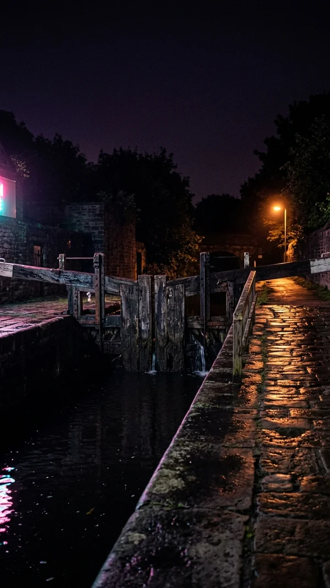
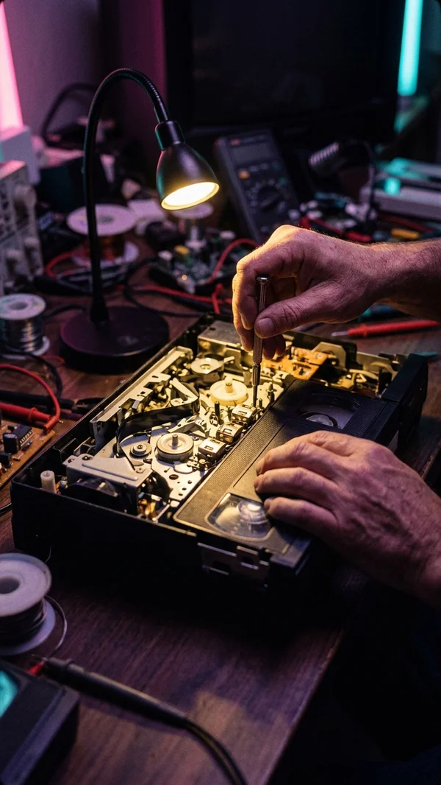

 canal restoration Lock 41: the gate finally moves @wetherby_navigations · filmed at 2:57am, obviously 1.2M views drowsy 9.1 this is keeping me awake
 tape mechanisms Your capstan is fine. Your idler tire is lying to you. @ferrite_forever · 22 min, you'll watch all of it 847K views drowsy 8.7 this is keeping me awake
medieval bread Baking a 1347 maslin loaf with period-accurate despair @trencher_daily · the yeast is foraged 2.4M views drowsy 9.6 this is keeping me awake
vertical transport Why the 1972 Mogilev counterweight never forgave anyone @shaft_and_cab · part 6 of 40 620K views drowsy 8.9 this is keeping me awake